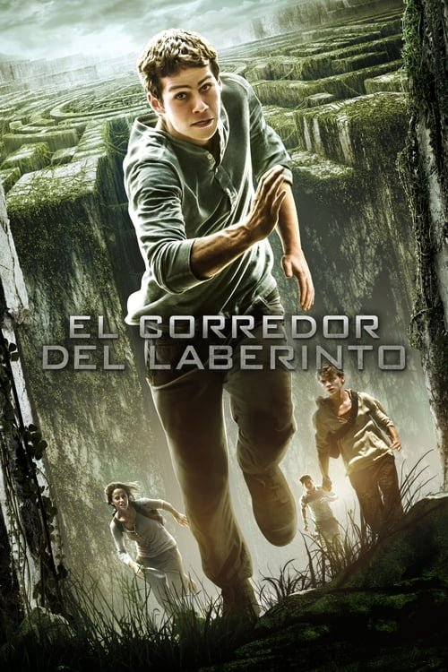

El corredor del laberinto (2014)
Sinopsis Rápida
Despierta sin memoria en un misterioso laberinto, rodeado de otros adolescentes con el mismo enigma. Su supervivencia depende de descifrar el mortal juego que los ha atrapado.
Sinopsis Detallada
Thomas se encuentra inexplicablemente en un ascensor, sin recordar nada de su pasado. Al llegar a un extraño claro, descubre que está rodeado de otros chicos en su misma situación, todos con amnesia. Su entorno es un laberinto mortal, habitado por criaturas aterradoras que acechan en la oscuridad. Para escapar, deben trabajar en equipo y descubrir los secretos ocultos tras el laberinto, enfrentándose a peligros constantes y a la creciente sensación de que no son solo víctimas, sino piezas de un experimento siniestro. La película ofrece una mezcla de suspenso, acción y ciencia ficción con una trama que te mantiene al borde del asiento.
¿Por qué tenés que verla?
- Una trama llena de giros inesperados que te mantendrá enganchado hasta el final.
- La ambientación y el diseño del laberinto son visualmente impresionantes y contribuyen a la atmósfera de tensión.
- Lanzó una exitosa saga que exploró temas de amistad, supervivencia y la naturaleza humana en un mundo post-apocalíptico.
- Las actuaciones convincentes de un joven reparto logran transmitir el miedo y la determinación de los protagonistas.
Idea Extra
Análisis comparativo de las adaptaciones cinematográficas de la saga 'El corredor del laberinto' con los libros originales.